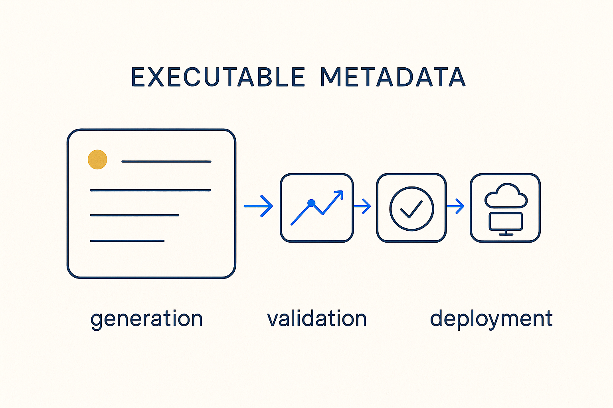

Metadata that doesn't just describe the platform — it runs it: driving generation, validation, and deployment.

> Metadata that doesn't just describe the platform — it runs it: driving generation, validation, and deployment.
Traditional metadata is a rear-view mirror: harvested after the fact, describing what the platform already does, drifting the moment anyone changes a pipeline. Executable metadata inverts the relationship — the metadata comes *first*, and the platform's behavior is executed from it. A mapping definition is not documentation of a load; it is the input that deterministic SQL generation turns into the load. Change the metadata, and the platform changes.
Being executable is what makes metadata trustworthy. Descriptive metadata can lie because nothing breaks when it is wrong; executable metadata cannot drift from reality because it *is* the source of that reality. This is the mechanical heart of the MDDE thesis: documentation, lineage, tests, and SQL all stay consistent because they are all executions of the same metadata.
The concept names the property; its siblings name the practices around it. Metadata-as-code gives executable metadata an engineering lifecycle (versioning, review, CI), and self-describing SQL closes the loop from the artifact side, keeping generated code traceable back to the metadata that produced it.
Where it lives: the metadata OS — the property that turns metadata from description into machinery.